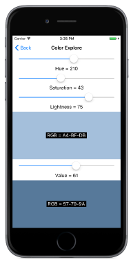

Integrating with Xamarin.Forms
Create SkiaSharp graphics that respond to touch and Xamarin.Forms elements
SkiaSharp graphics can integrate with the rest of Xamarin.Forms in several ways. You can combine a SkiaSharp canvas and Xamarin.Forms elements on the same page, and even position Xamarin.Forms elements on top of a SkiaSharp canvas:

Another approach to creating interactive SkiaSharp graphics in Xamarin.Forms is through touch.
The second page in the sample program is entitled Tap Toggle Fill. It draws a simple circle two ways — without a fill and with a fill — toggled by a tap. The TapToggleFillPage class shows how you can alter SkiaSharp graphics in response to user input.
For this page, the SKCanvasView class is instantiated in the TapToggleFill.xaml file, which also sets a Xamarin.Forms TapGestureRecognizer on the view:
<ContentPage xmlns="http://xamarin.com/schemas/2014/forms"
xmlns:x="http://schemas.microsoft.com/winfx/2009/xaml"
xmlns:skia="clr-namespace:SkiaSharp.Views.Forms;assembly=SkiaSharp.Views.Forms"
x:Class="SkiaSharpFormsDemos.TapToggleFillPage"
Title="Tap Toggle Fill">
<skia:SKCanvasView PaintSurface="OnCanvasViewPaintSurface">
<skia:SKCanvasView.GestureRecognizers>
<TapGestureRecognizer Tapped="OnCanvasViewTapped" />
</skia:SKCanvasView.GestureRecognizers>
</skia:SKCanvasView>
</ContentPage>
Notice the skia XML namespace declaration.
The Tapped handler for the TapGestureRecognizer object simply toggles the value of a Boolean field and calls the InvalidateSurface method of SKCanvasView:
bool showFill = true;
...
void OnCanvasViewTapped(object sender, EventArgs args)
{
showFill ^= true;
(sender as SKCanvasView).InvalidateSurface();
}
The call to InvalidateSurface effectively generates a call to the PaintSurface handler, which uses the showFill field to fill or not fill the circle:
void OnCanvasViewPaintSurface(object sender, SKPaintSurfaceEventArgs args)
{
SKImageInfo info = args.Info;
SKSurface surface = args.Surface;
SKCanvas canvas = surface.Canvas;
canvas.Clear();
SKPaint paint = new SKPaint
{
Style = SKPaintStyle.Stroke,
Color = Color.Red.ToSKColor(),
StrokeWidth = 50
};
canvas.DrawCircle(info.Width / 2, info.Height / 2, 100, paint);
if (showFill)
{
paint.Style = SKPaintStyle.Fill;
paint.Color = SKColors.Blue;
canvas.DrawCircle(info.Width / 2, info.Height / 2, 100, paint);
}
}
The StrokeWidth property has been set to 50 to accentuate the difference. You can also see the whole line width by drawing the interior first and then the outline. By default, graphics figures that are drawn later in the PaintSurface event handler obscure those drawn earlier in the handler.
The Color Explore page demonstrates how you can also integrate SkiaSharp graphics with other Xamarin.Forms elements, and also demonstrates the difference between two alternative methods for defining colors in SkiaSharp. The static SKColor.FromHsl method creates an SKColor value based on the Hue-Saturation-Lightness model:
public static SKColor FromHsl (Single h, Single s, Single l, Byte a)
The static SKColor.FromHsv method creates an SKColor value based on the similar Hue-Saturation-Value model:
public static SKColor FromHsv (Single h, Single s, Single v, Byte a)
In both cases, the h argument ranges from 0 to 360. The s, l, and v arguments range from 0 to 100. The a (alpha or opacity) argument ranges from 0 to 255.
The ColorExplorePage.xaml file creates two SKCanvasView objects in a StackLayout side by side with Slider and Label views that allow the user to select HSL and HSV color values:
<ContentPage xmlns="http://xamarin.com/schemas/2014/forms"
xmlns:x="http://schemas.microsoft.com/winfx/2009/xaml"
xmlns:skia="clr-namespace:SkiaSharp.Views.Forms;assembly=SkiaSharp.Views.Forms"
x:Class="SkiaSharpFormsDemos.Basics.ColorExplorePage"
Title="Color Explore">
<StackLayout>
<!-- Hue slider -->
<Slider x:Name="hueSlider"
Maximum="360"
Margin="20, 0"
ValueChanged="OnSliderValueChanged" />
<Label HorizontalTextAlignment="Center"
Text="{Binding Source={x:Reference hueSlider},
Path=Value,
StringFormat='Hue = {0:F0}'}" />
<!-- Saturation slider -->
<Slider x:Name="saturationSlider"
Maximum="100"
Margin="20, 0"
ValueChanged="OnSliderValueChanged" />
<Label HorizontalTextAlignment="Center"
Text="{Binding Source={x:Reference saturationSlider},
Path=Value,
StringFormat='Saturation = {0:F0}'}" />
<!-- Lightness slider -->
<Slider x:Name="lightnessSlider"
Maximum="100"
Margin="20, 0"
ValueChanged="OnSliderValueChanged" />
<Label HorizontalTextAlignment="Center"
Text="{Binding Source={x:Reference lightnessSlider},
Path=Value,
StringFormat='Lightness = {0:F0}'}" />
<!-- HSL canvas view -->
<Grid VerticalOptions="FillAndExpand">
<skia:SKCanvasView x:Name="hslCanvasView"
PaintSurface="OnHslCanvasViewPaintSurface" />
<Label x:Name="hslLabel"
HorizontalOptions="Center"
VerticalOptions="Center"
BackgroundColor="Black"
TextColor="White" />
</Grid>
<!-- Value slider -->
<Slider x:Name="valueSlider"
Maximum="100"
Margin="20, 0"
ValueChanged="OnSliderValueChanged" />
<Label HorizontalTextAlignment="Center"
Text="{Binding Source={x:Reference valueSlider},
Path=Value,
StringFormat='Value = {0:F0}'}" />
<!-- HSV canvas view -->
<Grid VerticalOptions="FillAndExpand">
<skia:SKCanvasView x:Name="hsvCanvasView"
PaintSurface="OnHsvCanvasViewPaintSurface" />
<Label x:Name="hsvLabel"
HorizontalOptions="Center"
VerticalOptions="Center"
BackgroundColor="Black"
TextColor="White" />
</Grid>
</StackLayout>
</ContentPage>
The two SKCanvasView elements are in a single-cell Grid with a Label sitting on top for displaying the resultant RGB color value.
The ColorExplorePage.xaml.cs code-behind file is relatively simple. The shared ValueChanged handler for the three Slider elements simply invalidates both SKCanvasView elements. The PaintSurface handlers clear the canvas with the color indicated by the Slider elements, and also set the Label sitting on top of the SKCanvasView elements:
public partial class ColorExplorePage : ContentPage
{
public ColorExplorePage()
{
InitializeComponent();
hueSlider.Value = 0;
saturationSlider.Value = 100;
lightnessSlider.Value = 50;
valueSlider.Value = 100;
}
void OnSliderValueChanged(object sender, ValueChangedEventArgs args)
{
hslCanvasView.InvalidateSurface();
hsvCanvasView.InvalidateSurface();
}
void OnHslCanvasViewPaintSurface(object sender, SKPaintSurfaceEventArgs args)
{
SKColor color = SKColor.FromHsl((float)hueSlider.Value,
(float)saturationSlider.Value,
(float)lightnessSlider.Value);
args.Surface.Canvas.Clear(color);
hslLabel.Text = String.Format(" RGB = {0:X2}-{1:X2}-{2:X2} ",
color.Red, color.Green, color.Blue);
}
void OnHsvCanvasViewPaintSurface(object sender, SKPaintSurfaceEventArgs args)
{
SKColor color = SKColor.FromHsv((float)hueSlider.Value,
(float)saturationSlider.Value,
(float)valueSlider.Value);
args.Surface.Canvas.Clear(color);
hsvLabel.Text = String.Format(" RGB = {0:X2}-{1:X2}-{2:X2} ",
color.Red, color.Green, color.Blue);
}
}
In both the HSL and HSV color models, the Hue value ranges from 0 to 360 and indicates the dominant hue of the color. These are the traditional colors of the rainbow: red, orange, yellow, green, blue, indigo, violet, and back in a circle to red.
In the HSL model, a 0 value for Lightness is always black, and a 100 value is always white. When the Saturation value is 0, Lightness values between 0 and 100 are shades of gray. Increasing the Saturation adds more color. Pure colors (which are RGB values with one component equal to 255, another equal to 0, and the third ranging from 0 to 255) occur when the Saturation is 100 and the Lightness is 50.
In the HSV model, pure colors result when both the Saturation and Value are 100. When Value is 0, regardless of any other settings, the color is black. Gray shades occur when the Saturation is 0 and Value ranges from 0 to 100.
But the best way to get a feel for the two models is to experiment with them yourself:
{kind=link}